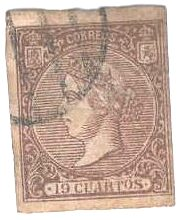
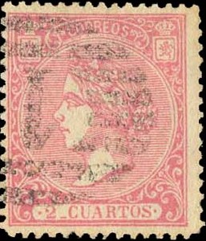
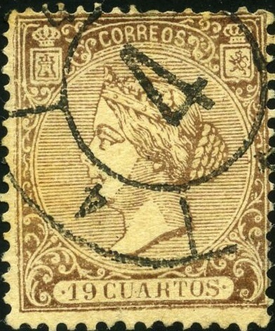
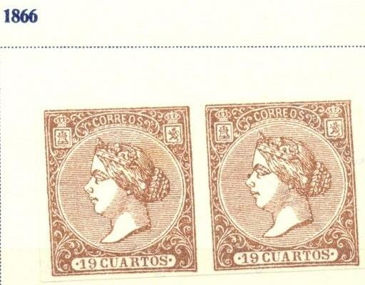
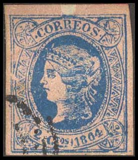

Return To Catalogue - Spain overview
Note: on my website many of the
pictures can not be seen! They are of course present in the
catalogue;
contact me if you want to purchase it.
For stamps of Spain from 1850 to 1855 with Queen Isabella click here, and for issues of 1856 to 1864 click here and 1865 Queen Isabella issue, click here.

2 cu red 4 cu blue 12 cu orange 10 cen green 19 cu brown 20 cen lilac
For the specialist, these stamps have perforation 14.
Value of the stamps |
|||
vc = very common c = common * = not so common ** = uncommon |
*** = very uncommon R = rare RR = very rare RRR = extremely rare |
||
| Value | Unused | Used | Remarks |
| 2 cu | R | *** | |
| 4 cu | *** | * | |
| 12 cu | R | ** | |
| 10 cen | R | R | |
| 19 cu | RRR | RR | |
| 20 cen | *** | *** | |

Postal forgery of the 20 c
A postal forgery exists of the 20 c value. It is described in 'Postal Forgeries of the World' by H.G.L. Fletcher. It is printed in greyish green instead of lilac. The small castle in the upper left top corner is different from the genuine stamp.
I've also seen many philatelic forgeries, examples:







Forgery with a numeral "4" cancel. See also: Spain forgeries made by 'Forger A'


(Segui forgeries of the 2 c, 10 cen, 12 c
and 19 c values)

Fournier forgeries from a Fournier Album.
I've seen imperforate Segui forgeries of the values 2c, 12 c, 10 c and 20 c.


(Front and backside of a Sperati forgery of the 19 c value)
Dot just beside the shading lines at the level of the foot of the
lion.
The above forgery of the 19 c was made by Sperati. There is a break in the ornament in the lower right corner in these forgeries. There is also a dot in the shading lines level with the foot of the lion (see image above). Sperati used genuine stamps from which he removed the image to create the above forgeries. Therefore the cancels and paper are genuine.

20 c brown
For the specialist; this stamp has perforation 14.
Value of the stamps |
|||
vc = very common c = common * = not so common ** = uncommon |
*** = very uncommon R = rare RR = very rare RRR = extremely rare |
||
| Value | Unused | Used | Remarks |
| 20 c | R | *** | |
I've been told that this is a forgery:


Another primitive forgery of the 2 c 1864 value. Next to it a
1866 perforated 20 c forgery of the same forger.
2 Cuartos brown 4 Cuartos blue 12 Cuartos yellow (orange after August 1869) 19 Cuartos red 19 Cuartos brown 10 Cent de Esc green 20 Cent de Esc lilac 25 Mils de Esc blue 25 Mils de Esc blue and red 50 Mils de Esc brown 50 Mils de Esc brown (other design, 1868) 100 Mils de Esc brown 200 Mils de Esc green
For the specialist, these stamps have perforation 14.
Value of the stamps |
|||
vc = very common c = common * = not so common ** = uncommon |
*** = very uncommon R = rare RR = very rare RRR = extremely rare |
||
| Value | Unused | Used | Remarks |
| 2 cu | R | *** | |
| 4 cu | *** | * | |
| 12 cu | R | * | orange: *** |
| 19 cu red | RRR | RR | |
| 19 cu brown | RRR | RRR | |
| 10 cen | R | *** | |
| 20 cen | *** | ** | |
| 25 mil blue | R | *** | |
| 25 mil blue and red | R | *** | |
| 50 mil | ** | c | |
| 50 mil | ** | c | Other design |
| 100 mil | R | R | |
| 200 mil | *** | *** | |
The remainders of these stamps were sold to dealers, they were
surcharged with three horizontal bars:

In 1868/69 some of these stamps were overprinted "HABILITADO POR LA NACION", example:

Example of a 'Habilitado' overprint
This overprint exists in 2 official types. Besides that, there are many 'local' overprints of a private or fiscal character. All these overprints are rare to extremely rare. A complete overview can be found at: 1868 'Habilitado' overprints.
For forgeries (both postal and philatelic) of the 1867 issue, click here.

(Inscription "RECIBOS")
These fiscal stamps are not very common.

In this design exist: 1 P brown, 2 P red and 5 P blue. Other fiscal stamps with Queen Isabella with inscription "DERECHOS DE FIRMA" exist for the Philippines.


{kind=link}
{kind=link}
{kind=link}
{kind=link}